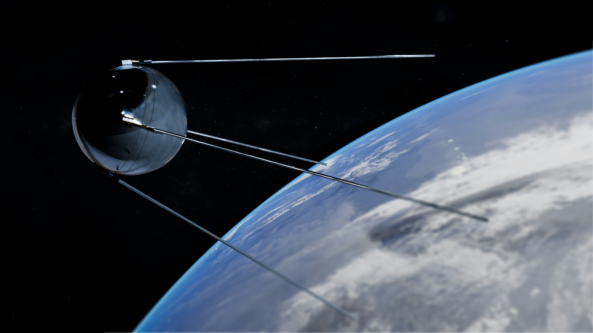

Naša misija
ZemGlas je osnovan 2026. godine s ciljem da satelitske tehnologije učini dostupnima svima. Naša misija je pružiti precizne, pravovremene i razumljive analize satelitskih podataka za održivi razvoj.

Upoznajte tim iza ZemGlas tehnologije
ZemGlas je osnovan 2026. godine s ciljem da satelitske tehnologije učini dostupnima svima. Naša misija je pružiti precizne, pravovremene i razumljive analize satelitskih podataka za održivi razvoj.

Naš tim čine stručnjaci iz područja geoinformatike, daljinskih istraživanja, umjetne inteligencije i održivog razvoja.
| Ime i prezime | Pozicija | Područje | Godine iskustva |
|---|---|---|---|
| Anica Kraljić | Glavna analitičarka | Daljinska istraživanja | 12 |
| Ilija Kvaćić | AI specijalist | Umjetna inteligencija | 8 |
| Mirko Nakić | Geoinformatičar | GIS analize | 10 |
| Marko Babić | Klimatolog | Klimatske promjene | 15 |
| Svelena Svelenski | Agronomkinja | Poljoprivredne analize | 9 |
Stalno razvijamo nove metode analize podataka
Naš rad doprinosi održivom razvoju planete
Činimo satelitske podatke dostupnima svima
Garantiramo visoku točnost naših analiza